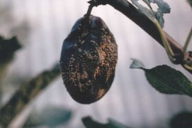

Csonthéjasok moníliás betegsége
Sclerotínia laxa
Valamennyi csonthéja
gyümölcsfajon előfordul, de a meggyen és kajszin okoz súlyos károkat. Tünete
sokféle: virág- és hajtésszáradás, gyümölcsrothadás, ágelhalás.
Legveszélyesebb fertőzési időszak a virágzás, mert ekkor a konídiumok a bibére
jutva csíráznak, és elpusztítják a magkezdeményeket. A virágkocsányon keresztül a
gomba a vesszőkbe jut, majd az idősebb fás részekbe, s ezek pusztulását okozza. Az
elhalt és ép részek határán a gomba évekig sebparazitaként élősködik, ez végül
ágrákosodáshoz vezethet.
A gyümölcs fertőződése általában seben keresztül történik. A rothadó folton
elszórtan penészpárnácskák jelennek meg. A gyümölcs lehull, vagy összeszáradva
mint "múmia" a fán marad.
A kórokozó a fertőzött gallyakban és múmiákban telel át. A konídiumok 8-10 fok
°C-on csíráznak, nagy páratartalom mellett. A fertőzés köd vagy erős harmat után
néhány óra alatt megtörténik. A védelem legfontosabb ideje a fehérbimbós állapot
és a virágzás között van.
Védekezés:
- Metszéskor a beteg ágak, gallyak, múmiák eltávolítása, megsemmisítése.
Vegyi védelem:
| Báriumpoliszulfid 45 Novenda (lemosó permetezéshez) Chinoin-Fundazol 50 WP Orthocid 50 WP Dithane M-45 Vondozeb Plus Polyram-Combi Topsin Metil 70 WP Rubigan 12 EC Ronilan 50 WP Sumilex 50 WP Rovral |
 |